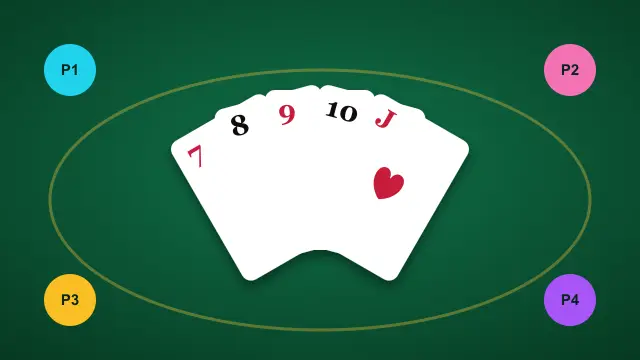

CASE STUDY · Freelance & client projects
Building Real-Time Card & Casino Games: Multiplayer Rummy, Bingo and More
My experience building real-time games for clients: multiplayer Rummy and card games, a live Bingo number game with server-synced rounds, and casino-style games using sockets.

Real-time multiplayer games are some of the most demanding projects a game developer can take on. Every player must see the same game state at the same moment, and every result has to be trusted. I've built real-time card and casino-style games for clients: multiplayer Rummy and card games, a live Bingo number game, and a suite of casino games.
Casino Game Suite: five games in one app
One project combined five casino-style games in a single app: Roulette Fun, Roulette 100, Lucky7 Dice Roll, Sic Bo Dice Roll and Fun Target. Each had its own gameplay and rich animations, all connected in real time through socket connections.
A live number game with 60-second rounds
I also worked on a live number game with a new round every 60 seconds. It's a single-player game, but rounds run on the server clock, so the countdown and results always come from the server rather than the device, and results are provably fair: the outcome is locked in before betting opens and can be checked afterwards.
What makes multiplayer card games hard
- One source of truth. The server must own the game state; clients only display it. Otherwise players can see different tables.
- Real-time sync. Sockets keep every player's screen updated the instant something changes.
- Turn flow and timers. Turn-based games like Rummy need clear turn order, timeouts and reconnection handling.
- Trust. For card and number games, players must believe results are fair, so transparency and correct logic matter as much as visuals.
Available for these projects
If you're planning a Rummy, card, board or casino-style multiplayer game, I'm available for freelance and full-time work, in Pune or remote. Get in touch.
Tech stack
Unity, C#, socket programming, real-time multiplayer, server-synced game state.